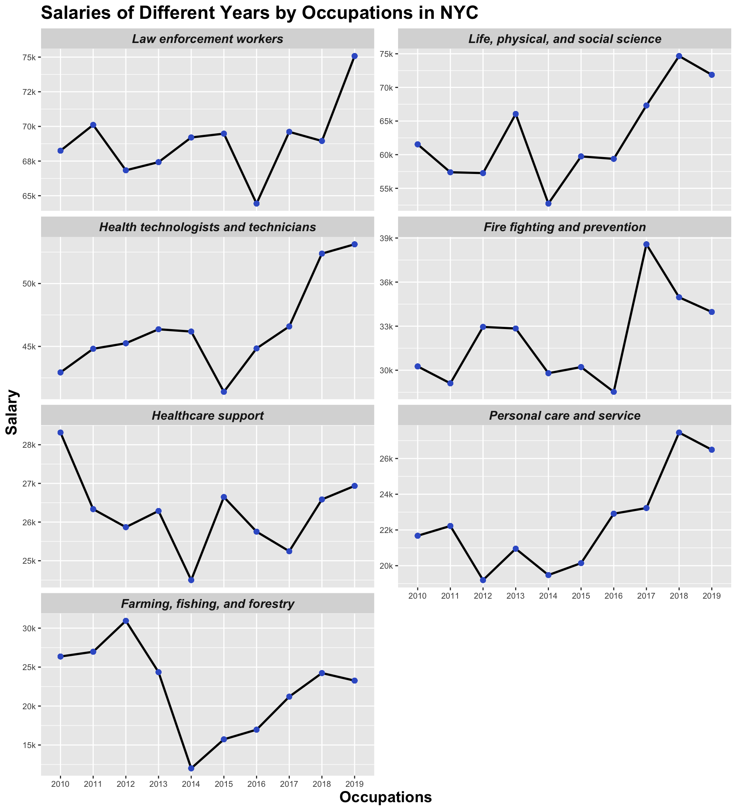
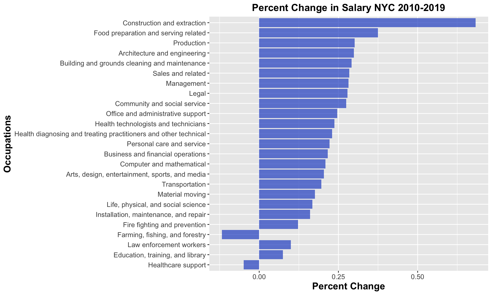

Chapter 4 Missing values
There are some missing values in the numemp (short for number of employed) dataset and salary dataset. We analyzed the missing data based on the mi package in r and pre-processed the missing values based on jupyter notebook.
4.1 ‘numemp’ dataset
4.1.1 Missing Value Analysis
4.1.1.1 Initial Analysis
First, we analyzed the origin version of the dataset, the form of this dataset is as follows. There are nine columns in this dataset. The Bronx County, New York, Kings County, New York, New York County, New York, Queens County, New York and Richmond County, New York provide us with the number of employed in the corresponding county. The Occupations, year, race and Gender columns give us information of each observation. For analysis convenience, we set the Occupations, year, race and Gender columns to NULL, so that we can focus on the missing values of number of employed in different groups.

## NOTE: In the following pairs of variables, the missingness pattern of the first is a subset of the second.
## Please verify whether they are in fact logically distinct variables.
## [,1] [,2]
## [1,] "Bronx.County..New.York" "Richmond.County..New.York"
## [2,] "New.York.County..New.York" "Richmond.County..New.York" From this plot, we can see that there are missing values in
From this plot, we can see that there are missing values in Bronx County, New York, New York County, New York and Richmond County, New York. Also, the majority of the missing values are in Richmond County, New York. For some observations, all of the three values are missing.
4.1.1.2 Further Analysis
In order to find a better way to deal with the missing data, we do a further analysis on the missing values. * First, we combine the information of counties and races and use the their combinations as new columns.
- Second, we see the ratio of the number of NAs in each column.
## Bronx _ Asian Kings _ Asian
## 0.0 0.0
## NY _ Asian Queens _ Asian
## 0.0 0.0
## Richmond _ Asian Bronx _ African
## 0.2 0.0
## Kings _ African NY _ African
## 0.0 0.0
## Queens _ African Richmond _ African
## 0.0 0.8
## Bronx _ Hispanic Kings _ Hispanic
## 0.0 0.0
## NY _ Hispanic Queens _ Hispanic
## 0.0 0.0
## Richmond _ Hispanic Bronx _ Other
## 0.0 0.0
## Kings _ Other NY _ Other
## 0.0 0.0
## Queens _ Other Richmond _ Other
## 0.0 1.0
## Bronx _ Above2 Kings _ Above2
## 0.6 0.0
## NY _ Above2 Queens _ Above2
## 0.2 0.0
## Richmond _ Above2 Bronx _ White
## 1.0 0.0
## Kings _ White NY _ White
## 0.0 0.0
## Queens _ White Richmond _ White
## 0.0 0.0
## Bronx _ White_not_Hisp. Kings _ White_not_Hisp.
## 0.0 0.0
## NY _ White_not_Hisp. Queens _ White_not_Hisp.
## 0.0 0.0
## Richmond _ White_not_Hisp.
## 0.0As can be seen from the result, all values in group Richmond _ Above2 and group Richmond _ Other are missing. Missing values also appears in Richmond _ Asian, Richmond _ African, Bronx _ Above2 and NY _ Above2.
It also shows that the type of these missing data is Missing at Random (MAR), because most of the missing values are in some specific groups. As we can discover, most of the missing values are in the race group of Two or More Races. It might be because very limited amount of people are in this race group, so sometimes it is hard to do effective statistic for this group.
- Then, we use
mipackage to visualize the NAs.
## NOTE: In the following pairs of variables, the missingness pattern of the second is a subset of the first.
## Please verify whether they are in fact logically distinct variables.
## [,1] [,2]
## [1,] "Richmond _ Other" "Bronx _ Above2"
## [2,] "Richmond _ Other" "NY _ Above2" This visualization shows us that there is no strong pattern of the missing values in each observation.
4.1.2 Pre-process Missing Values
Based on the patterns of missing values, we apply different data pre-preprocess methods to different groups of missing values. Below is our strategies for different groups.
1. group Richmond _ Above2 and group Richmond _ Other
* Strategy: For the missing values in group Richmond _ Above2 (‘Richmond County’ and ‘Two or more races’) and group Richmond _ Other (Richmond County and ‘Some Other Race Alone’), we fill the NAs with 0.
* Reason: All the values in this group are missing, including values of both genders and all years, so we cannot find a suitable value to represent the missing value.
2. missing values in Bronx County, New York, New York County, New York and Richmond County, New York
* Strategy: First, we group the dataset by Occupations, race, and Gender, then we calculate the mean value of different years and use that mean value to represent the NAs under each county.
* Reason: For each combination of Occupation, race and Gender in these counties, there are always some valid data in some years. Therefore, we use the average value of the available years in corresponding groups to represent the missing values.
The code of filling missing data in numemp dataset is attached below.
https://github.com/tracy3057/STAT5702_NYC_Employment_Analysis/blob/main/DataPreprocessing/Code/NumEmp/PreprocessMissingValues.ipynb
4.2 ‘salary’ dataset
4.2.1 Missing Value Analysis
4.2.1.1 Initial Analysis
We also analyzed the origin version of this dataset first, the form of this dataset is as follows. There are eight columns in this dataset. The Bronx County, New York, Kings County, New York, New York County, New York, Queens County, New York and Richmond County, New York provide us with the number of employed in the corresponding county. The Occupations, year, and Gender columns give us information of each observation. For analysis convenience, we set the Occupations, year and Gender columns to NULL, so that we can focus on the missing values of number of employed in different groups.
## NOTE: In the following pairs of variables, the missingness pattern of the first is a subset of the second.
## Please verify whether they are in fact logically distinct variables.
## [,1] [,2]
## [1,] "Bronx.County..New.York" "Richmond.County..New.York"
## [2,] "Kings.County..New.York" "Richmond.County..New.York"
## [3,] "New.York.County..New.York" "Richmond.County..New.York"
## [4,] "Queens.County..New.York" "Richmond.County..New.York" From this plot, we can see that there are missing values in
From this plot, we can see that there are missing values in Kings County, New York, Queens County, New York and Richmond County, New York. Also, the majority of the missing values are in Richmond County, New York. In some observations, all of the three values are missing.
4.2.1.2 Further Analysis
In order to find suitable strategies for dealing with missing data in salary dataset, we change the form of salary dataset. To be specific, we set columns to be years. Each observation shows the corresponding salary of some certain combination of occupation and gender from 2010 to 2019. We do this rearrangement to see if there is a situation that for some specific combination of occupation and gender, all values are missing from 2010 to 2019.
* First, we change the shape of our dataset.
## NOTE: In the following pairs of variables, the missingness pattern of the second is a subset of the first.
## Please verify whether they are in fact logically distinct variables.
## [,1] [,2]
## [1,] "2013" "2018" As can be seen from this plot, the majority of missing values concentrate in several observations. We picked these rows out to see if there’s some observations in which all values are missing. * Second, we picked out the rows with NAs to see the percentages of the missing values.
As can be seen in the result, for the majority of observations with missing values, there are still some valid values there in some certain years. However, there are two rows where all values are missing. Therefore, we pick out the two rows to see their information in detail. * Third, we pick out the rows in which all values are missing.
## # A tibble: 1 x 13
## Occupations Gender county `2010` `2011` `2012` `2013` `2014` `2015` `2016`
## <chr> <chr> <chr> <dbl> <dbl> <dbl> <dbl> <dbl> <dbl> <dbl>
## 1 Farming, f… Male Richm… NA NA NA NA NA NA NA
## # … with 3 more variables: `2017` <dbl>, `2018` <dbl>, `2019` <dbl>## # A tibble: 1 x 13
## Occupations Gender county `2010` `2011` `2012` `2013` `2014` `2015` `2016`
## <chr> <chr> <chr> <dbl> <dbl> <dbl> <dbl> <dbl> <dbl> <dbl>
## 1 Farming, f… Female Richm… NA NA NA NA NA NA NA
## # … with 3 more variables: `2017` <dbl>, `2018` <dbl>, `2019` <dbl>As can be seen from the result, the two groups are the male and female in farming, fishing, and forestry occupations in Richmond County. Therefore, for subsequent data pre-process of these two groups, we cannot use the average of other years to replace the missing values. Instead, we will use the average salary of other counties in the same occupation, year, gender group to represent the missing values in farming, fishing, and forestry occupations in Richmond County.
4.2.2 Pre-process Missing Values
According to the analysis above, we follow the following steps to do data pre-process.
1. Divide the salary dataset by county.
2. Under each sub-dataset, we group the dataset by Occupations, gender and year, then we calculate the group mean of each group and use the mean values to replace missing values.
3. For some occupations, the salary values of one gender are completely missing. For these occupations, we group the dataset by Occupations and year, and use the group mean to repalce the missing values.
4. Combine the data of each sub-dataset together.
5. For farming, fishing, and forestry occupations in Richmond County, where all values are missing, we plan to use the average salary of other counties in the same occupation, year, gender group to represent the missing values. Therefore, we group the combined dataset by Occupations, gender, county and year. Then we use the group average to replace the missing values.
The code of filling missing data in numemp dataset is attached below.
https://github.com/tracy3057/STAT5702_NYC_Employment_Analysis/blob/main/DataPreprocessing/Code/Salary/Preprocess_MissingValue.ipynb